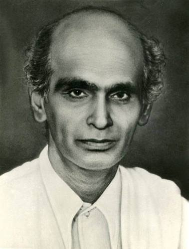
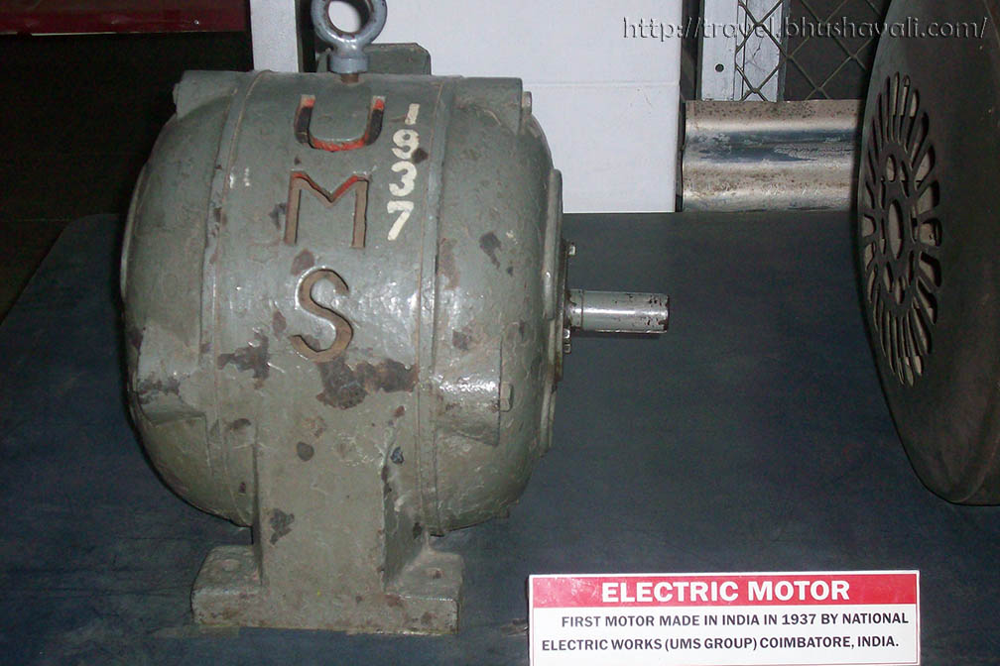
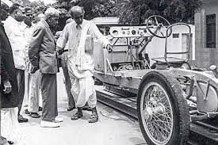
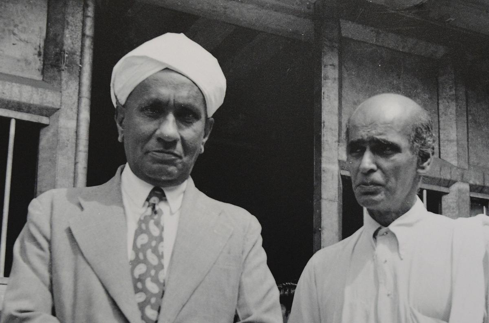
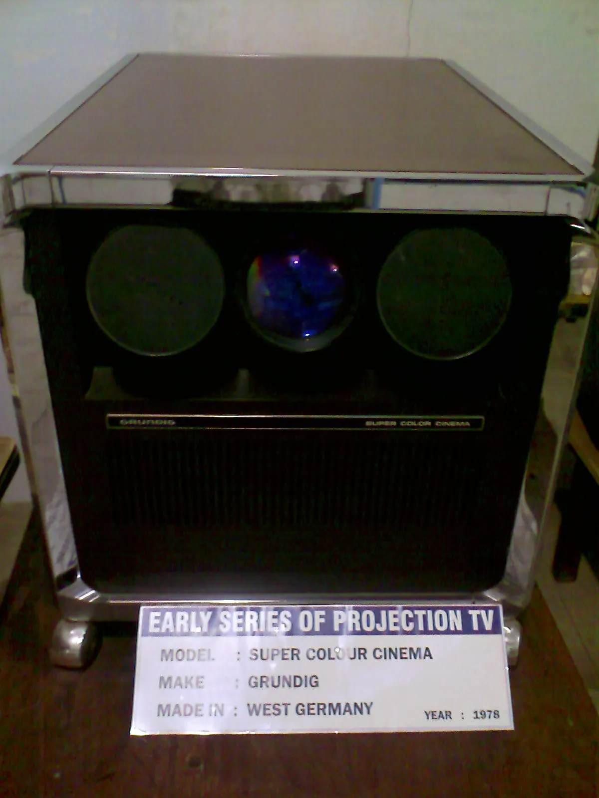

Photo Gallery and Videos
Visual documentation of GD Naidu's life and work
Historical Photographs





Suggested Captions & Descriptions
Naidu in His Laboratory
Caption: G. D. Naidu working on machines in his laboratory.
Description: This photograph shows Naidu surrounded by tools and components, reflecting his habit of personally experimenting with mechanical and electrical systems.
Early Bus Services
Caption: One of the buses operated under Naidu's transport services.
Description: Naidu's organised and well-maintained bus fleet improved public transport around Coimbatore and became a model for later services.
Prototype Car
Caption: A prototype of the indigenous car developed under Naidu's guidance.
Description: Although it never reached mass production, this project was one of India's earliest attempts to build a fully Indian-designed and manufactured car.
GD Naidu Museum Exterior
Caption: Entrance to the GD Naidu Museum in Coimbatore.
Description: The museum preserves his inventions, tools, and various scientific and historical artefacts, keeping his spirit of innovation alive for new generations.
Documentary Videos
These videos provide deeper insights into Naidu's life and inventions:
GD Naidu: The Edison of India
A comprehensive documentary exploring the life and inventions of GD Naidu.
Naidu's Inventions: Technical Analysis
Engineers examine the technical innovations behind GD Naidu's inventions.
The Legacy of GD Naidu
Exploring how GD Naidu's work continues to influence modern Indian innovation.